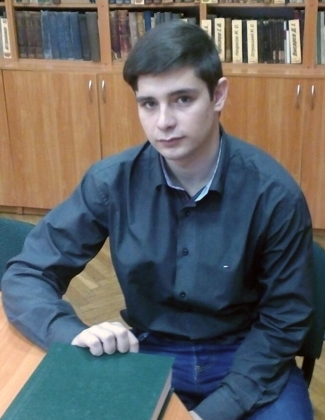
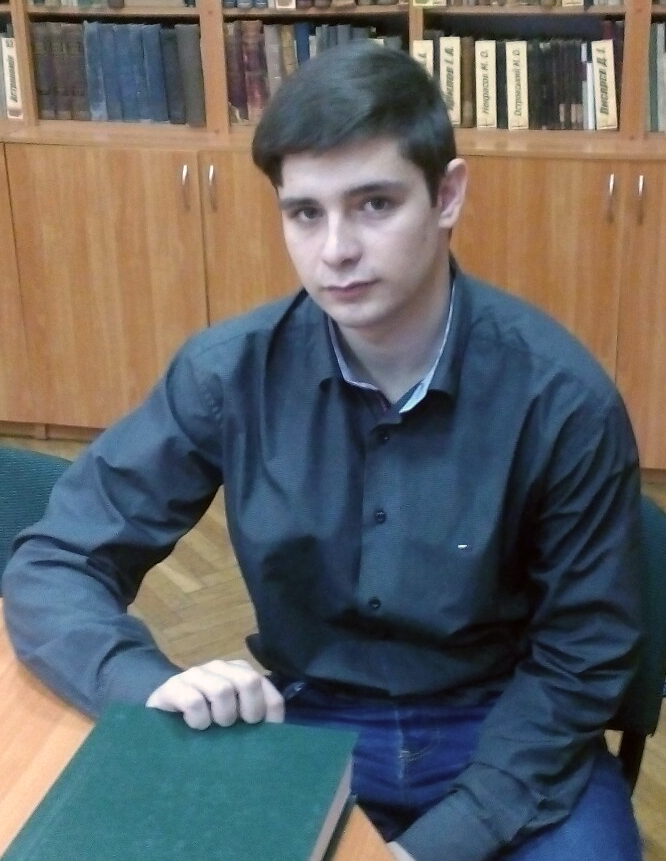

Ковальчук Віталій Борисович
Проживаю в Житомирі. Навчаюся в Житомирському державному університеті імені Івана Франка на фізико-математичному факультеті спеціальність інформатика. З 2018 року працюю програмістом в бібліотеці імені Івана Франка.
Про мене

Проживаю в Житомирі. Навчаюся в Житомирському державному університеті імені Івана Франка на фізико-математичному факультеті спеціальність інформатика. З 2018 року працюю програмістом в бібліотеці імені Івана Франка.